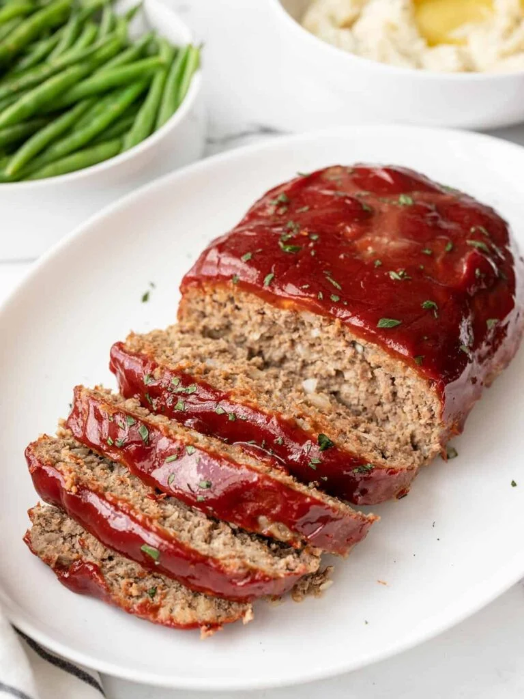

Meatloaf

Description:
For a classic meatloaf that's both comforting and flavorful, start by combining ground beef, breadcrumbs, eggs, diced onions, minced garlic, and a blend of seasonings such as salt, pepper, and dried herbs. Mix the ingredients together until well combined, then shape the mixture into a loaf and place it in a baking dish. Bake the meatloaf in the oven until it's cooked through and golden brown on the outside. Let it rest for a few minutes before slicing and serving with your favorite sides for a satisfying meal.
This hearty meatloaf recipe offers a perfect combination of savory flavors and tender texture. It's a timeless dish that's easy to prepare, making it a great option for busy weeknights or family gatherings when you need a comforting meal that everyone will enjoy.
Ingredients
- Ground Beef 1 lb
- Breadcrumbs 1/2 cup
- Eggs 2
- Diced Onion 1/2 cup
- Minced Garlic 2 cloves
Steps
- Preheat the oven to 350°F (175°C). In a large mixing bowl, combine 1 pound of ground beef, 1/2 cup of breadcrumbs, 2 eggs, 1/2 cup of diced onion, and 2 cloves of minced garlic. Season with salt, pepper, and any desired herbs or spices.
- Mix the ingredients until well combined, then shape the mixture into a loaf and place it in a baking dish. Bake in the preheated oven for 45-60 minutes, or until the meatloaf is cooked through and golden brown on the outside.
- Remove the meatloaf from the oven and let it rest for 5-10 minutes before slicing. Serve slices of meatloaf with your favorite gravy, mashed potatoes, and steamed vegetables for a comforting and satisfying meal.
Home